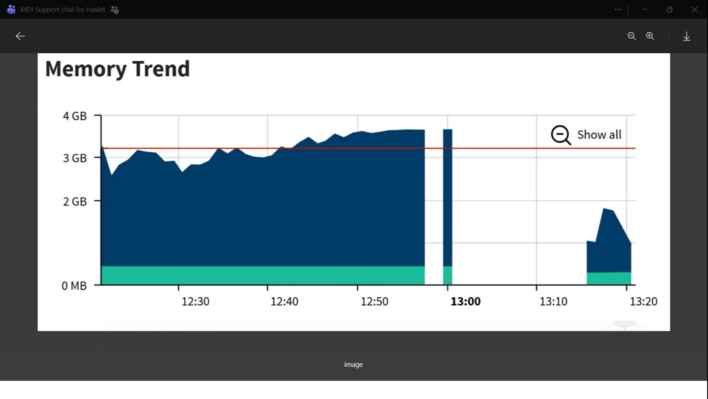

| Procedure ID | proc_verify_optsweep_wcs_windows_service_health_v1 |
|---|---|
| Title | Verify OptiSweep/WCS Windows service health when RMS/logs appear silent |
| Procedure Type | diagnostic |
| Primary Role | L2_support |
| Support Safe | Yes |
| Capability Tags | wcs_service_health |
| Access Surface | event_viewer |
| Audience Roles | L2_support |
| Failure Pattern Tags | service_crash_or_restart |
| Validation Status | needs_sme_review |
| Merge Status | source_finalized |
When the system appears to have a crash/restart period and logs may be silent, verify whether the relevant OptiSweep/WCS Windows service(s) are actually Running vs Stopped in the Windows Services MMC. Use the service state as the primary observable when log activity is missing.
Use when RMS and/or other log-based signals appear silent during a suspected OptiSweep/WCS crash/restart window, and you need host-level evidence that the service is Running vs Stopped.

Responsible role: L2_support
Instruction:
On the OptiSweep/WCS host, open the Windows Services MMC / Windows Services view (the Services list).
Expected result:
The Services list is visible with a Status column that can show Running vs Stopped for services.
Stop or Escalate If:
Responsible role: L2_support
Instruction:
In the Services list, locate the OptiSweep/WCS-related service(s) (the segment notes there are about 10 services) and check the Status column for Running vs Stopped.
Expected result:
You identify the relevant OptiSweep/WCS-related service(s) and observe their Status as Running or Stopped.
Stop or Escalate If:
Responsible role: L2_support
Instruction:
If the relevant OptiSweep/WCS service(s) are Stopped (or show restart behavior), treat that as evidence consistent with the segment’s “service must stop” / “service was just like … gone” period during the suspected crash window.
Expected result:
Your conclusion matches the observed Status: Stopped/restarting supports the suspected crash/restart period; Running supports normal operation.
Stop or Escalate If:
Responsible role: L2_support
Instruction:
If you cannot identify the relevant OptiSweep/WCS service(s) in the Services list, or if the Services view does not show clear Running/Stopped status, stop and escalate.
Expected result:
Escalation is initiated with the evidence that the relevant service(s) could not be identified or status was unclear.
Stop or Escalate If: